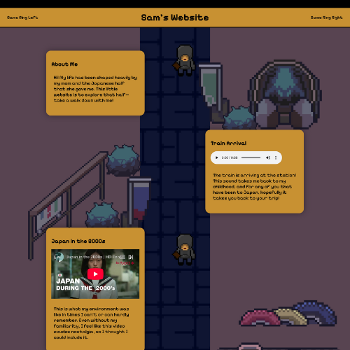

Personal Website

This was my first ever web project — a hand-coded interactive timeline retracing my childhood and seven years spent in Japan. Built from scratch in HTML, CSS, and JavaScript, it's designed to feel like navigating a memory: my school backpack, a favorite photograph, the train stations I'd pass through every day. The aesthetic is a direct homage to 1990s and 2000s Japanese web design — dense, expressive, and completely distinct from the clean minimalism that dominates the web today.
The Experience
Rather than a standard scrolling page, the site is structured as a timeline you physically walk through. A pixel art character — controlled by your mouse — moves down the timeline as you navigate, acting as a stand-in for you exploring the memories. Each stop on the timeline is a snapshot of life in Japan: a specific object, place, or moment. At the very end of the timeline, the character walks into a pixel art Nintendo DSi sprite I drew myself, closing out the journey. It's the detail I'm most proud of — it turns what could have been a static photo gallery into something that actually feels like moving through time.
The Design
The visual language is pulled directly from early Japanese internet aesthetics — the kind of personal homepages and fan sites that defined Japanese web culture before social media flattened everything into the same template. Busy layouts, pixel art, handcrafted UI elements, and a sensibility that prioritizes personality over polish. Building it that way wasn't just nostalgic — it was a deliberate design choice to make the medium match the subject matter.
Through this project I've learned and practiced:
- HTML, CSS, and JavaScript fundamentals — this was the project that taught me how the web actually works
- Interactive UI without frameworks — building a character that tracks the mouse and responds to the user's position on the page
- Pixel art in Aseprite — designing the walking character sprite, the DSi, and other custom assets
- Digital art in Procreate and Photoshop for visual elements throughout the timeline
- Deployment with Git and GitHub Pages
- Design research — studying 1990s and 2000s Japanese web aesthetics and translating them into a cohesive modern build